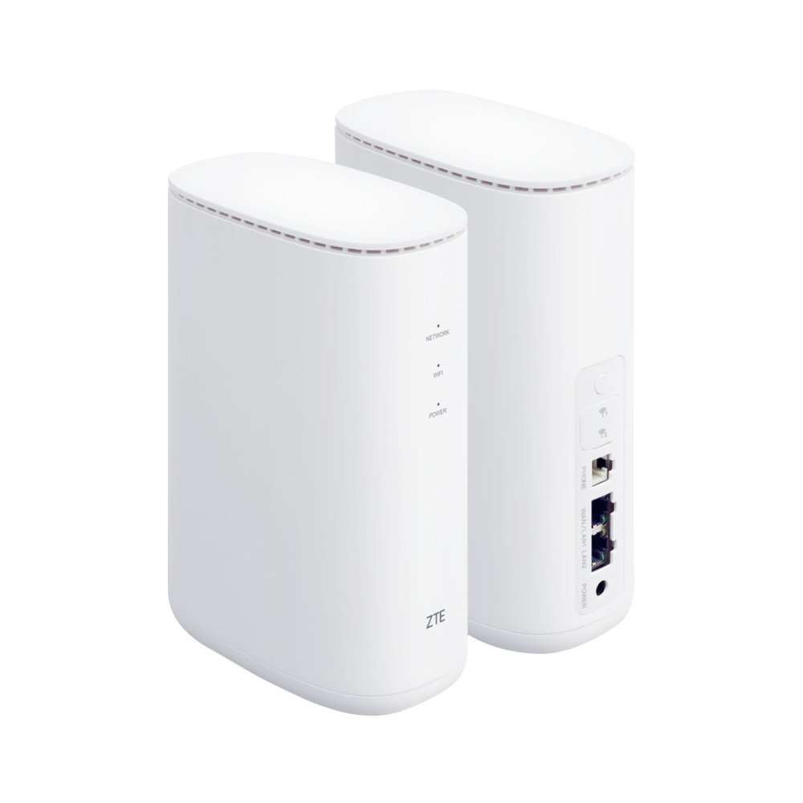
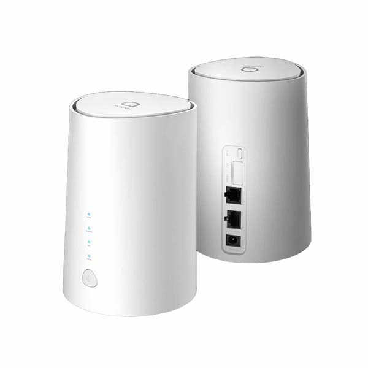

Es ist definitiv das erste

und ich wohne in 6465 Nassereith
Hallo,
seid ich in meiner neuen Wohnung bin, hab ich überhaupt kein Gutes Internet. Ich kann überhaupt nichts machen. Bekomme schon Aggressionen dabei. Router Neustarten bringt nur minimal was.
ich hab 2 mal bei der Technik angerufen, die immer sagen, das Internet würde gut gelaufen. Genau und deswegen rufe ich gerade an um zu sagen, dass Internet geht gar nicht.
2 mal gibt man mir die gleiche Lösung, die einfach gar nicht Hilft.
mehr könnten sie nicht machen.
Ich zahle über 30 Euro für eine Leistung die ich überhaupt nicht bekomme.
vertrag kann ich nicht ändern oder beenden, da der Vertrag erst im Oktober 23 abläuft.
ich kann halt einfach nichts machen, wenn ich in den Browser gehe am Pc, lädt es entweder so extremst Weile dass eh kein Bock mehr hast, daran was zu machen ohne so lange dass ne Fehlermeldung kommt.
kann ich jetzt wirklich nichts machen, außer warten bis es Oktober wird?
Hi @Sandyxona
Vielleicht gibt es Möglichkeiten deine Internet-Geschwindigkeit zu verbessern.
Um was für einen Internet-Anschluss handelt es sich denn und welchen Router verwendest du?
Solltest du dir nicht sicher sein, kannst du auch ein Foto vom Gerät machen und hier hochladen.
LG NTM
Ich hab das Modem Internet flex 75. ich kann leider kein Bild machen, ich weiß nicht wann ich das nächste mal in der Wohnung bin.
Also ein Mobilfunkinternet vom Oktober 2021.
Das sollte es auf den ZTE MF289D oder den Alcatel HH71 eingrenzen.

ZTE MF289D

Alcatel HH71
Sollte ich daneben liegen gibt es hier eine Liste weiterer Geräte:
https://www.magenta.at/hilfe-service/services/hardwaresupport/devices//internet-flex
Bei Mobilfunk ist es sehr abhängig von der genauen Position wie die Versorgung aussieht.
Wenn du schrieben könntest in welcher Ortschaft sich die Wohnung befindet könnte ich mal nachsehen, wo die nächsten Sendemasten sind und was diese können.
Es ist definitiv das erste

und ich wohne in 6465 Nassereith
Probier' den Router mal an verschiedenen Stellen in der Wohnung / im Haus aus. Im Normalfall wird die Signalstärke unterschiedlich gut sein, außer du wohnst in einer Ein-Zimmer-Wohnung.
Bei uns im Haus gibt es alles, von exzellentem Empfang bis gar keinen, je nachdem, wo man den Router hinstellt.
Grundsätzlich den Router möglichst nahe am Fenster so platzieren, dass er "freie Sicht" nach draußen hat, das kann nie schaden. Bei einem Fenster, das dem Mobilfunkmasten zugewandt ist - auch, wenn man den Masten nicht sehen kann - ist der Empfang in der Regel am besten.
Bearbeitet von gs1969Die Sache ist die, wenn mein Pc nicht per lan Kabel verbunden ist dann geht er nicht. Heißt der Router muss in der Nähe sein…
Du kannst trotzdem ausprobieren, ob der Empfang woanders im Haus für den Router besser ist, indem du dein Handy über WLAN mit dem Router verbindest (und natürlich mobile Daten am Handy derweil abdrehst). Sollte das zufriedenstellend funktionieren, weißt du wenigstens, was dein Problem ist.
Ok werde ich machen.
kann es eigtl sein dass man den Ort Wechsel angeben muss? Ich meine damit wenn man das Internet bei einer anderen Adresse angemeldet hat und dann aber umzieht?
vor 5 Stunden schrieb Sandyxona:Es ist definitiv das erste
")
und ich wohne in 6465 Nassereith
Ich habe mal nachgesehen wo sich die Magenta Sendemasten in deiner Nähe sind.
Zum einen ein Sendemast am Dach des Felsenheimer Hof (Karl-Mayr-Straße 16, 6465 Nassereith) mit Nummer 79836. Dieser hat fast die volle Ausstattung welche für 4G/LTE von Magenta möglich ist. Der ZTE MF289D wird mit diesen Sendemasten seine Fähigkeiten voll ausschöpfen können. Also wäre eine Ausrichtung auf diesen Sendemasten empfehlenswert. Wie @gs1969 geschrieben hat solltest du es zumindest mal ausprobieren. Für den PC würde sich auch eine Lösung finden lassen.
Es gibt auch einen weiteren Sendemast im Kirchturm der St. Nikolaus Kirche mit Nummer 42742. Dieser hat die minimalste 4G/LTE Ausstattung, welche es bei Magenta gibt. Dieser Sendemast stellt nur eine sehr geringe Kapazität bereit (37,5 Mbit/s welche geteilt werden).
Übrigens ist es möglich auf der Konfigurationsseite des ZTE MF289D die Empfangswerte der Mobilfunkverbindung auszulesen.
Die Konfigurationsseite kann unter http://192.168.1.1 aufgerufen werden. Das Admin-Passwort für das Gerät findet sich auf der Unterseite des Geräts. Nach dem Anmelden befindet sich auf der Startseite die Option "Ausführliche Informationen". Diese Option auswählen und in der unteren Hälfte des neuen Fensters stehen die Werte RSRP, RSSI, SINR, und Zellen-ID. Könntest du mal diese Werte teilen könntest zum Überprüfen?
vor 21 Minuten schrieb Sandyxona:Ok werde ich machen.
kann es eigtl sein dass man den Ort Wechsel angeben muss? Ich meine damit wenn man das Internet bei einer anderen Adresse angemeldet hat und dann aber umzieht?
Deinen Internetanschluss kannst du in ganz Österreich verwenden, aber es kommt auf die Gegebenheiten vor Ort an wie gut bzw. ob es funktioniert. Die Adresse solltest du aber dennoch ändern (über Mein Magenta) oder ändern lassen (über den Kundenservice).
Ich kann gerne das überprüfen, jedoch dauert das etwas, da ich in Moment nicht in meiner Wohnung bin. Sobald ich dort bin schicke ich es

vor einer Stunde schrieb NTM:Ich habe mal nachgesehen wo sich die Magenta Sendemasten in deiner Nähe sind.
Zum einen ein Sendemast am Dach des Felsenheimer Hof (Karl-Mayr-Straße 16, 6465 Nassereith) mit Nummer 79836. Dieser hat fast die volle Ausstattung welche für 4G/LTE von Magenta möglich ist. Der ZTE MF289D wird mit diesen Sendemasten seine Fähigkeiten voll ausschöpfen können. Also wäre eine Ausrichtung auf diesen Sendemasten empfehlenswert. Wie @gs1969 geschrieben hat solltest du es zumindest mal ausprobieren. Für den PC würde sich auch eine Lösung finden lassen.
Es gibt auch einen weiteren Sendemast im Kirchturm der St. Nikolaus Kirche mit Nummer 42742. Dieser hat die minimalste 4G/LTE Ausstattung, welche es bei Magenta gibt. Dieser Sendemast stellt nur eine sehr geringe Kapazität bereit (37,5 Mbit/s welche geteilt werden).
Übrigens ist es möglich auf der Konfigurationsseite des ZTE MF289D die Empfangswerte der Mobilfunkverbindung auszulesen.
Die Konfigurationsseite kann unter http://192.168.1.1 aufgerufen werden. Das Admin-Passwort für das Gerät findet sich auf der Unterseite des Geräts. Nach dem Anmelden befindet sich auf der Startseite die Option "Ausführliche Informationen". Diese Option auswählen und in der unteren Hälfte des neuen Fensters stehen die Werte RSRP, RSSI, SINR, und Zellen-ID. Könntest du mal diese Werte teilen könntest zum Überprüfen?
Deinen Internetanschluss kannst du in ganz Österreich verwenden, aber es kommt auf die Gegebenheiten vor Ort an wie gut bzw. ob es funktioniert. Die Adresse solltest du aber dennoch ändern (über Mein Magenta) oder ändern lassen (über den Kundenservice).
der erste Sendemast den du genannt hast ist in meiner Nähe.
Am 28.1.2023 um 14:26 schrieb NTM:Ich habe mal nachgesehen wo sich die Magenta Sendemasten in deiner Nähe sind.
Zum einen ein Sendemast am Dach des Felsenheimer Hof (Karl-Mayr-Straße 16, 6465 Nassereith) mit Nummer 79836. Dieser hat fast die volle Ausstattung welche für 4G/LTE von Magenta möglich ist. Der ZTE MF289D wird mit diesen Sendemasten seine Fähigkeiten voll ausschöpfen können. Also wäre eine Ausrichtung auf diesen Sendemasten empfehlenswert. Wie @gs1969 geschrieben hat solltest du es zumindest mal ausprobieren. Für den PC würde sich auch eine Lösung finden lassen.
Es gibt auch einen weiteren Sendemast im Kirchturm der St. Nikolaus Kirche mit Nummer 42742. Dieser hat die minimalste 4G/LTE Ausstattung, welche es bei Magenta gibt. Dieser Sendemast stellt nur eine sehr geringe Kapazität bereit (37,5 Mbit/s welche geteilt werden).
Übrigens ist es möglich auf der Konfigurationsseite des ZTE MF289D die Empfangswerte der Mobilfunkverbindung auszulesen.
Die Konfigurationsseite kann unter http://192.168.1.1 aufgerufen werden. Das Admin-Passwort für das Gerät findet sich auf der Unterseite des Geräts. Nach dem Anmelden befindet sich auf der Startseite die Option "Ausführliche Informationen". Diese Option auswählen und in der unteren Hälfte des neuen Fensters stehen die Werte RSRP, RSSI, SINR, und Zellen-ID. Könntest du mal diese Werte teilen könntest zum Überprüfen?
Deinen Internetanschluss kannst du in ganz Österreich verwenden, aber es kommt auf die Gegebenheiten vor Ort an wie gut bzw. ob es funktioniert. Die Adresse solltest du aber dennoch ändern (über Mein Magenta) oder ändern lassen (über den Kundenservice).
sorry dass ich erst jetzt antworte, ich Ware eine lange Zeit nicht mehr in meiner Wohnung. Das wären die Angaben

Edit: Bild entfernt - öffentliche IP ersichtlich
Bearbeitet von Jonathan DorianAlso der Router ist auf jeden Fall mit dem nördlicheren der beiden Sendemasten verbunden (79836).
Die RSRP und SINR Werte sind allerdings nicht die besten. Vielleicht findet sich ein Ort an dem der RSRP eher Richtung -90 dBm oder höher ist (nicht vergessen negative Zahl) und der SINR eine positive Zahl ist (im Idealfall 5 dB oder höher).
{kind=link}